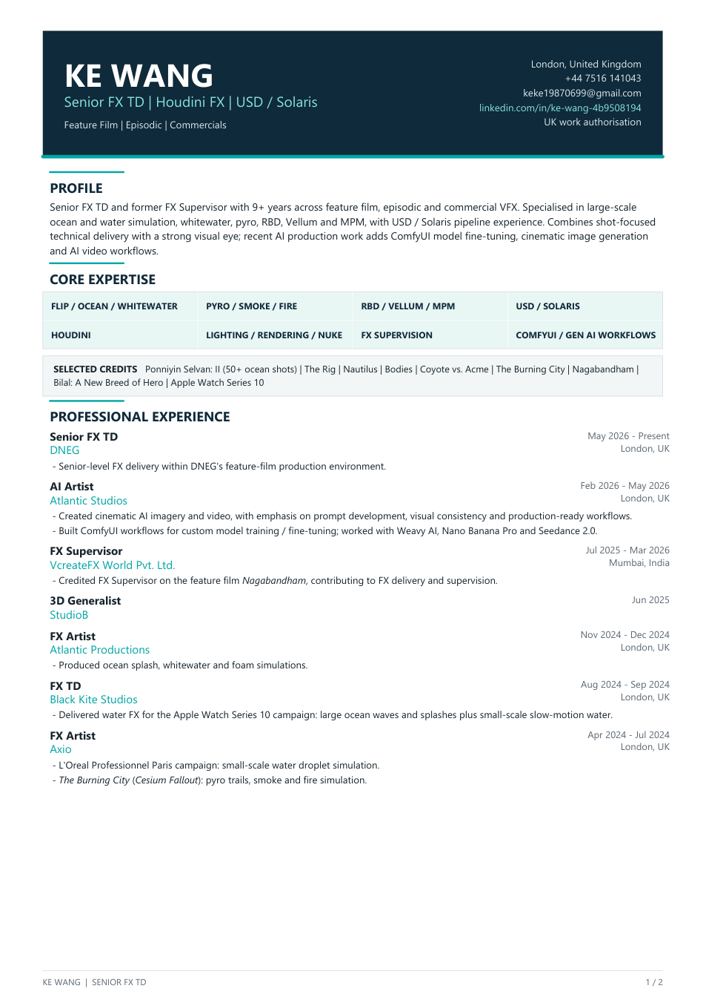

A film-first portfolio where motion, atmosphere and shot clarity lead the page.
Senior FX TD
Water, pyro and cinematic FX for film, episodic and premium commercial work.
Profile
Built for motion, not static thumbnails.
Core strengths
Professional Profile
A concise profile expanded into reel, shots and tutorials.
Showreel
One reel for recruiters, studios and collaborators.
Focus
Shot-first technical strengths.
Selected Work
Selected shots and breakdown-ready clips.
Tutorial Library
Long-form Houdini tutorials and practical breakdowns.
Teaching and channel growth
Tutorials sit beside the reel as part of the same professional voice.
Self-hosted playback keeps lessons accessible without relying on third-party embeds.
Experience
Recent roles, productions and studio work.
Owner Insights
Anonymous site analytics for daily traffic, sources and audience spread.
What this tracks
This owner-only view records anonymous page visits so you can check how many people visited, where traffic came from, which pages perform best and which countries are finding the site.
- Unique visitors and page views for the last 24 hours and 7 days.
- Top sources such as LinkedIn, direct traffic or other referring sites.
- Country, device and page popularity trends without exposing personal identity.
Loading analytics module.
Last 7 days
Rolling window of anonymous visitors and page views.
Top sources
Where people found the site.
Top countries
Anonymous geographic spread.
Top pages
Most-viewed destinations across the site.
Top devices
Desktop, mobile and tablet mix.
Credits
Selected productions and campaign work.
Resume
A downloadable CV alongside the portfolio overview.

What the resume highlights
- 9+ years across feature film, episodic and commercial VFX.
- Senior FX TD delivery in Houdini with USD / Solaris and Nuke-aware workflows.
- Core strength in ocean, FLIP, whitewater, pyro, RBD, Vellum and MPM.
- Recent AI production work in ComfyUI fine-tuning, image generation and video workflows.
Contact
Available for studio conversations, collaborations and tutorial opportunities.
Say hello
LinkedIn YouTubeLondon-based and open to conversations around feature, episodic, commercial and education-focused FX work.
Current focus
Senior FX work with a strong emphasis on water-driven storytelling, environment integration and clean shot handoff.
This portfolio uses direct video hosting so recruiters can review the work quickly on desktop, mobile and restricted-network environments.
Family
A small personal page for Anna Wang.
A gentle final page after the professional body of work.